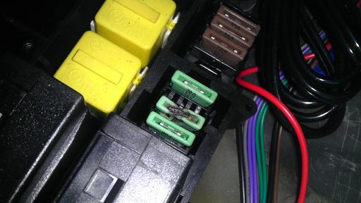
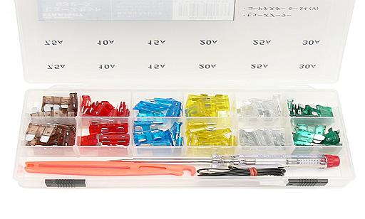

 溶けているヒューズが・・・ 番号からどこのヒューズか調べてみると、リアデフォッガーの30Aヒューズだった。 ここもブロアの時と同様にプラスチックの台座まで溶けていた＿|￣|○ リアデフォッガーはこれまで不調も無く使用していた。こんな姿になっても溶断せず電気を流し続けるなんて・・・ いったい何の為のヒューズなんだか（笑 ヒューズが溶けた理由を現在Ｍゴロー号の主治医であるメカニックに聞いてみると「30Aの大電流が流れるヒューズは電気を流すとそれなりに発熱し、経年劣化で抵抗が増加し徐々に溶けてきたのだろう」との見解だった。 E34と同年代ベンツの棒ヒューズも台座を溶かしてしまうことがよくあるそうだ。 この場合、ヒューズを新品に交換して著しい発熱が無ければ大丈夫とのことだった。 そこで、ヒューズの耐用年数が気になって調べてみると、某電装メーカーのＨＰには10年〜15年と記載されていた。 Ｍゴロー号は製造から２１年経っている。そろそろ全てのヒューズを交換してもよさそうだ。
|
 本当はBMW純正に拘りたかったが、ヒューズ１個につき300円はキツイ（笑 そこで何かお手ごろなのは無いかと調べていると・・・ ヒューズ93ピース 980円 庶民の味方！アストロプロダクツで93個で980円のヒューズを見つけた。１個当り約10円？！ お値打ちすぎて少し怖いが21年前の物よりはマシだろう。 エンジンルームからシート下まで全てのヒューズを新しい物に交換しておいた。 １個10円でも今のところ問題は起きていない。 BMW純正はヒューズを外さなくても切れているか確認できたが、このタイプのヒューズは外さないと切れているのか分からない。 こんなところにもBMWの拘りを感じた。 ヒューズをチェックして怪しいヶ所があれば総交換を考えても良いだろう。 なんてったって980円だし（笑
|